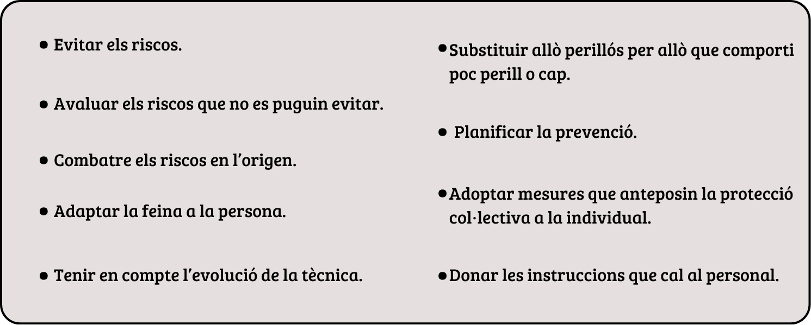

2. Com cal prevenir els riscos en l'empresa
Pla de prevenció de riscos laborals
El pla de prevenció és un document essencial per identificar, avaluar i gestionar els riscos en l'entorn laboral.
Fases del pla de prevenció de riscos laborals
- Identificació dels riscos: Analitzar activitats i processos.
- Avaluació dels riscos: Valorar la probabilitat i gravetat.
- Planificació de mesures: Establir accions preventives concretes.
- Implementació de les mesures: Aplicar les accions previstes.
- Seguiment i revisió: Controlar l'eficàcia i adaptar el pla si cal.
Avaluació de riscos
L'avaluació de riscos és un procés sistemàtic que permet identificar i analitzar els perills presents en el lloc de treball, amb l'objectiu de prendre mesures per minimitzar-los o eliminar-los.
Fases de l'avaluació de riscos:
-
a. Identificació del risc: Detectar els perills presents en cada activitat, procés o lloc de treball. Aquesta fase inclou:
- Observar les tasques i condicions de treball.
- Analitzar els equips, materials i substàncies utilitzades.
- Revisar possibles fonts de risc, com ara màquines, agents químics o situacions d'estrès.
-
b. Estimació del risc: Avaluar la probabilitat que un risc es materialitzi i la gravetat de les seves conseqüències. Es classifiquen els riscos segons:
- Probabilitat: Alta, mitjana o baixa.
- Impacte: Lleu, moderat o greu.
-
c. Valoració del risc: Determinar si el risc identificat és acceptable segons els criteris establerts. Si el risc no és acceptable, caldrà planificar mesures correctores.
-
d. Priorització del risc: Ordenar els riscos segons la seva gravetat i urgència, donant prioritat als que tenen un impacte més alt i probabilitat elevada. Aquest pas garanteix que els recursos es dediquin als riscos més crítics.
Planificació de l'acció preventiva
Quan ja s’han dut a terme els passos necessaris en l’avaluació de riscos, es procedeix a la planificació de l’acció preventiva.
La planificació de l’acció preventiva consisteix a organitzar les activitats necessàries per a reduir, eliminar i controlar les situacions de risc detectades en l’avaluació.
La planificació de la prevenció ha de basar-se en els principis de l’acció preventiva:

Si els resultats de l’avaluació no fossin els esperats, l’empresa haurà de:
Establir les mesures de prevenció i protecció necessàries:
- Les mesures de prevenció són el conjunt d’accions que tracten d’eliminar els riscos.
- Les mesures de protecció són el conjunt d’accions que intenten protegir dels riscos que no s’han pogut eliminar.
Les mesures de prevenció tenen preferència respecte de les mesures de protecció, ja que les primeres eliminen el risc, mentre que les de protecció no ho fan, sinó que resguarden davant del risc.
Informar i formar les persones treballadores per aconseguir que facin correctament les seves tasques.
Controlar periòdicament els riscos de les condicions de treball.
Per a cada mesura preventiva s’haurà d’establir
1. Termini previst per a l’execució de les accions preventives.
2. Assignació dels recursos econòmics per a l’assoliment dels objectius previstos.
3. Recursos humans i materials necessaris per a l’execució.
La planificació de la prevenció ha d’estar integrada en totes les activitats de l’empresa i en tots els nivells jeràrquics.
4. Quins organismes vetllen per la prevenció de riscos?
Hi ha organismes públics d’àmbit nacional i internacional que exerceixen funcions de promoció de la prevenció dels riscos laborals, assessorament tècnic, així com vigilància i control del compliment de la normativa. Alguns dels organismes més destacats són els següents:
| Organisme |
Pàgina web |
|
L’Institut Nacional de Seguretat i Salut en el Treball (INSST) és l’òrgan científic-tècnic especialitzat, depenent de l’Administració general de l’Estat, que té com a missió l’anàlisi i l’estudi de les condicions de seguretat i salut en el treball, així com la promoció i el suport a la millora d’aquestes.
|
www.insst.es
|
|
La Comissió Nacional de Seguretat i Salut en el Treball (CNSST) és l’òrgan col·legiat assessor de les administracions públiques en la formulació de les polítiques de prevenció i l’òrgan de participació institucional en matèria de seguretat i salut en el treball.
|
www.insst.es/cnsst
|
|
La Inspecció de Treball i Seguretat Social (ITSS) és l’organització administrativa responsable del servei públic de control i vigilància del compliment de les normes d’ordre social. Inclou els serveis d’exigència de les responsabilitats administratives pertinents en què puguin incórrer empreses i persones treballadores, així com l’assessorament i la informació a aquestes en matèria laboral i de Seguretat Social.
|
www.mites.gob.es/itss/web/index.html
|
|
La Fundació Estatal per a la Prevenció de Riscos Laborals (FSPRL) té com a finalitat primordial la promoció, especialment en les petites i mitjanes empreses, d’activitats destinades a la millora de les condicions de seguretat i salut en el treball.
|
www.funprl.es/Aplicaciones/Portal/portal/aspx/Home.aspx
|
|
L’Agència Europea per a la Seguretat i la Salut en el Treball (AESST) s’ocupa de fer que els llocs de treball siguin més segurs, saludables i productius. Fomenta una cultura de la prevenció de riscos per a millorar les condicions de treball a Europa.
|
https://osha.europa.eu/es
|
|
Eurofound (Fundació Europea per a la millora de les Condicions de Vida i de Treball) contribueix a la planificació i l’establiment de millors condicions de vida i treball a Europa. Desplega la seva tasca en associació amb governs, empreses, sindicats i la Unió Europea.
|
https://eurofound.europa.eu/institutions-law-budget/institutions-and-bodies/search-all-eu-institutions-and-bodies/eurofound_es
|